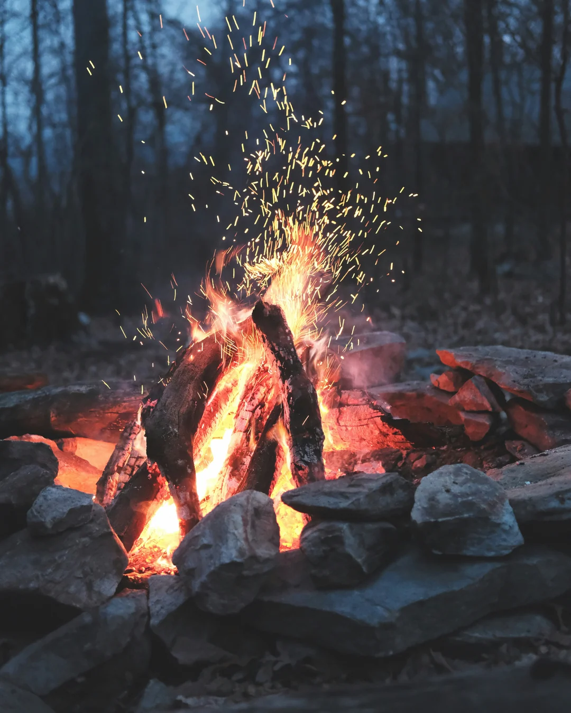

Case #17 · Fire
About this case
Case #17 is closed. It was the daily case for November 17, 2026 and its theme was Fire. The detectives of that day had two challenges: five images to judge as real photographs or AI-made pictures, and five one-sentence claims to judge as facts or fakes.
- AI-generated images: 3 of 5
- Fake claims: 2 of 5
Below you will find every answer. Each AI-generated image comes with the prompt that produced it, and each claim with the truth behind it and the details worth remembering, so you can check what you missed.
One of the fakes: “A huge fire in the Sahara Desert caused a rain of glass.” The truth: No fire is hot enough to melt desert sand; Libyan Desert Glass came from a meteorite about 29 million years ago.
Want to sharpen your eye? Read our guide to spotting AI images or our guide to spotting fake news, then play today's case.
Images
-
Image 1
REAL
Real photograph
-
Image 2

AI
The suspect's confession
A fire lit in a stone fireplace in a country house, with logs crackling, ash piled at the base and part of a poker leaning beside it; warm firelight as the only illumination.
-
Image 3

AI
The suspect's confession
Barbecue embers on a patio at sunset, with a grease-stained grill and a column of smoke crossing the image; focus on the embers and a blurred background with plastic chairs.
-
Image 4

AI
The suspect's confession
A controlled stubble burn in a farm field in mid-afternoon, with a line of low flames, dense gray smoke and a farmer seen from behind in the distance; telephoto lens, air slightly distorted by the heat.
-
Image 5

REAL
Real photograph
Fact or Fake
-
Claim 1
FAKE “A huge fire in the Sahara Desert caused a rain of glass.”
No fire is hot enough to melt desert sand; Libyan Desert Glass came from a meteorite about 29 million years ago.
- Melting sand into glass takes about 1,700 °C (3,090 °F).
- The pale yellow glass fused almost instantly in a meteorite blast.
-
Claim 2
FACT “In zero gravity, flames take the shape of perfect spheres.”
Without convection in microgravity, as on the ISS, flames become spheres that are often bluish.
- On Earth, convection stretches flames into a teardrop shape.
- In space, oxygen reaches the flame equally from all directions.
-
Claim 3
FACT “Speakers capable of putting out fires with sound have been patented.”
In 2015, two George Mason University engineering students invented and patented a sonic fire extinguisher.
- Its speakers emit low-frequency waves that separate oxygen from the fuel.
- It puts out flames without water or chemicals.
-
Claim 4
FACT “Some tree species need to burn in order to proliferate.”
Some trees, like giant sequoias and jack pines, depend on fire to open their cones (serotiny).
- Their cones are sealed with a very hard resin that only intense heat melts.
- The seeds fall on cleared ground rich in nutritious ash.
-
Claim 5
FAKE “In 1969, a river in the United States burned with flames five stories tall.”
The 1969 Cuyahoga River fire was small and out in 30 minutes; the 15 m (50 ft) flames were from 1952.
- The Ohio river, polluted with oil and waste, caught fire over a dozen times.
- Time used a photo of the 1952 fire in its 1969 story.